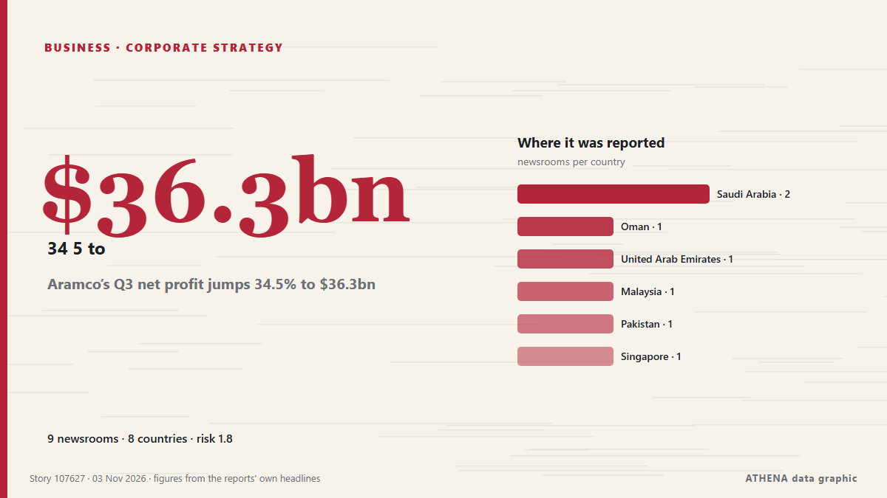

Unternehmensstrategie
GesponsertPräsentiert von  Cybernetics and Artificial Intelligence Lab Welcome to the Cybernetics and Artificial Intelligence Laboratory, established at the Department of Business Administration of the National
Cybernetics and Artificial Intelligence Lab Welcome to the Cybernetics and Artificial Intelligence Laboratory, established at the Department of Business Administration of the National
| 21. Okt. | 0 |
|---|---|
| 22. Okt. | 0 |
| 23. Okt. | 0 |
| 24. Okt. | 0 |
| 25. Okt. | 0 |
| 26. Okt. | 0 |
| 27. Okt. | 0 |
| 28. Okt. | 0 |
| 29. Okt. | 1 |
| 30. Okt. | 5 |
| 31. Okt. | 4 |
| 1. Nov. | 2 |
| 2. Nov. | 9 |
| 3. Nov. | 3 |
Schlagzeilen werden auf Englisch angezeigt, wie veröffentlicht.

Aramco’s Q3 net profit jumps 34.5% to $36.3bn
RIYADH: Saudi Aramco’s net profit rose 34.5 percent year on year to $36.3 billion in the third quarter, boosted by higher revenue and a gain from the sale of its stake in Malaysian refining and… von Arab News
WinGD Grows Korea Engine Production Capacity
Swiss marine power company WinGD has signed its first-ever license agreement with engine builder HD Hyundai Marine Engine (formerly STX Heavy Industri... von The Maritime Executive
Google disrupts million-device XCPE Android malware botnet, bans TV box maker
Google and industry partners have dismantled the XCPE malware botnet consisting of more than 1.3 million Android TV streaming TV boxes that Google says its manufacturer intentionally infected with… von BleepingComputer
Céline Mortier elected new President of WISTA International
WISTA International has elected Céline Mortier as its new President, succeeding Elpi Petraki, who completed four years in the role. von Container News
Nakilat Names Nine New Gas Carriers in South Korea
Qatar Gas Transport Company (Nakilat) has named nine new gas carriers at three South Korean shipyards, marking progress in its fleet expansion programs aimed at increasing LNG transportation capacity… von MarineLink
Ryanair to hit passengers in Europe with 'double-digit' hikes in air fares
Irish no-frills airline Ryanair said Monday it would launch a cost-cutting drive and hike fares next year to help offset the impact of soaring jet fuel prices driven by the Middle East war. von The Local Italy
UAE’s Al Habtoor Group to sell all assets in Lebanon: What to know
The company suspended operations in Lebanon back in January, citing massive losses exceeding $1.7 billion due to the country's financial crisis, capital controls and security concerns. von Al-Monitor
Trezor reports suspected hardware implant in Safe 5 sold by CryptoBilis
Trezor urged CryptoBilis buyers to migrate funds after receiving a credible report of a hardware implant inside a Safe 5 device. von The Block
BP nets £4.4bn boost for balance sheet after Castrol deal completes
The oil group said it would use the net proceeds to bolster pay down debts. von The Irish News (Belfast)
Top rating from MARC for MAG’s sukuk programme
MAG president Nasaruddin A Bakar says the company will continue enhancing its network, in-flight services and MRO capabilities. von Free Malaysia Today
The Gambia, Zoomlion sign waste management concession agreement
By Alex Adi The Government of The Gambia and Zoomlion Ghana Limited, a subsidiary of the Jospong Group of Companies, have officially signed a landmark concession agreement and broken ground for the… von GBC Ghana Online
Results for Third Quarter Ending 30 September 2026
Wintermar reports a 67.6%YOY jump in Operating Profit to US$24.7million for 9M2026 on 30.0%YOY revenue growth, ... von Antara (English)
Foxconn unveils 3 EVs to grow contract manufacturing business
The MODEL A+, MODEL K+ and MODEL K expand the company's EV portfolio to 12 models. von News of Bahrain
Kioxia's AI storage boom faces a test as pricing gains moderate, shipments shift
Kioxia's latest results show how AI infrastructure spending is reshaping the NAND flash business, lifting profitability even as consumer demand weakens. von DigiTimes Asia
Oil giant Aramco takes 49% stake in Saudi AI company
Aramco will inject about US$2.6 billion in cash and assets into Humain as the AI firm seeks to expand its capabilities and meet rising demand. von Free Malaysia Today
French MPs vote for a €0.055 tax on every gigabyte sent to users
France’s National Assembly has voted to tax companies for every gigabyte of data they send to French internet users. von The Next Web
Juba City Council lays off 32 staff over tax revenue fraud
JUBA—Juba City Council says it has taken disciplinary action against 32 employees over malpractice in tax revenue collection, after an investigation found that the council was losing about 50 percent… von Sudans Post
Waymo picks Toyota bZ4X as its next robotaxi, starting in Japan in 2027
Waymo is adding the Toyota bZ4X to its robotaxi lineup. von Electrek
Environmental defenders testify about attacks in Latin America linked to Canadian mining companies
The Inter-American Commission on Human Rights heard testimony Oct. von Mongabay